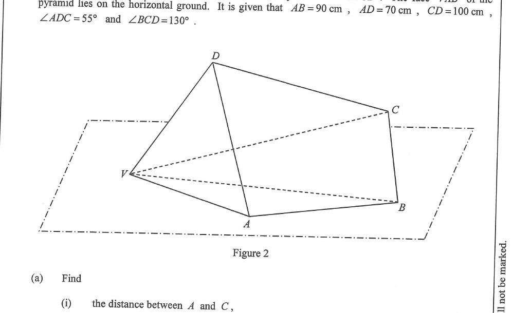

三角學 · 立體圖形與兩平面夾角

$$AC^2=70^2+100^2-2(70)(100)\cos55^\circ=14900-8030.1$$
$$AC^2\approx6869.9\quad\Longrightarrow\quad AC\approx82.885\text{ cm}\approx82.9\text{ cm}$$
$$\sin\angle DAC=\frac{100\sin55^\circ}{82.885}\approx0.9883\quad\Longrightarrow\quad\angle DAC\approx81.2^\circ$$
$$\angle ACD=180^\circ-55^\circ-81.2^\circ\approx43.8^\circ$$
因 $AC$ 在 $\angle BCD=130^\circ$ 之內：
$$\angle ACB=130^\circ-43.8^\circ\approx86.2^\circ$$
在 $\triangle ABC$ 中用餘弦公式（$AB=90$、$AC=82.885$）：
$$90^2=BC^2+82.885^2-2(BC)(82.885)\cos86.2^\circ$$
$$BC^2-10.99\,BC-1230.1=0\quad\Longrightarrow\quad BC\approx41.0\text{ cm}$$
在 $\triangle ABC$ 用正弦公式：
$$\sin\angle BAC=\frac{41.0\sin86.2^\circ}{90}\approx0.4545\quad\Longrightarrow\quad\angle BAC\approx27.0^\circ$$
$$\angle BAD=\angle DAC+\angle BAC\approx81.2^\circ+27.0^\circ\approx108.2^\circ$$
在平面 $ABCD$ 內，$D$ 到 $AB$ 的垂直距離：
$$d=AD\sin\angle DAB=70\sin108.2^\circ\approx66.5\text{ cm}$$
兩平面夾角為 $65^\circ$，故 $D$ 離地面的高度：
$$DD'=d\sin65^\circ\approx66.5\times0.9063\approx60.3\text{ cm}$$
$V$ 在地面上，故在直角三角形 $VDD'$（$D'$ 為直角）中：
$$\sin\theta=\frac{DD'}{VD}=\frac{60.3}{80}\approx0.753\quad\Longrightarrow\quad\theta\approx48.9^\circ$$
因 $48.9^\circ<50^\circ$，該學生的說法正確。✔